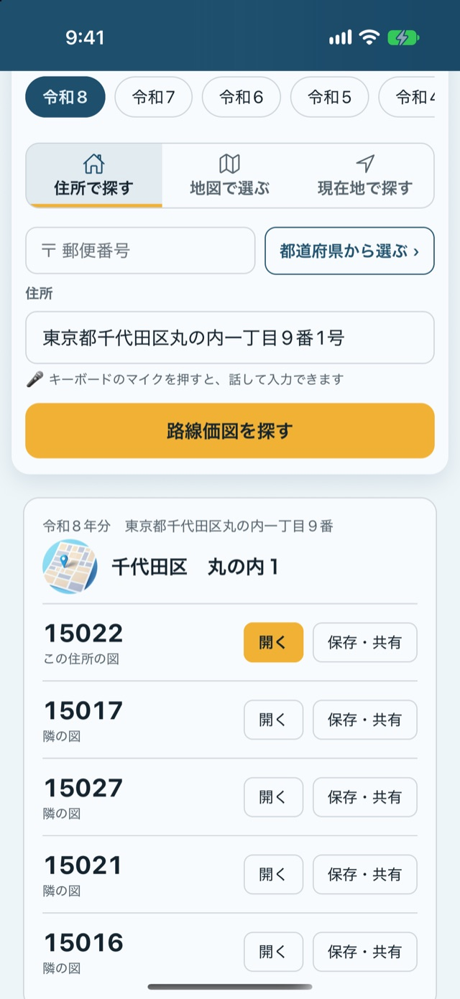
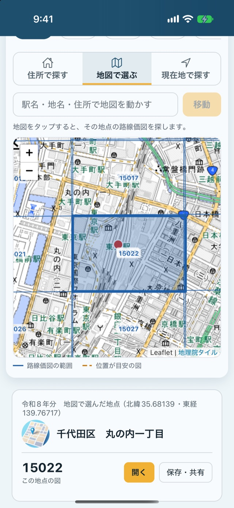
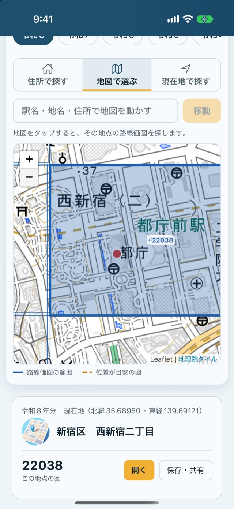
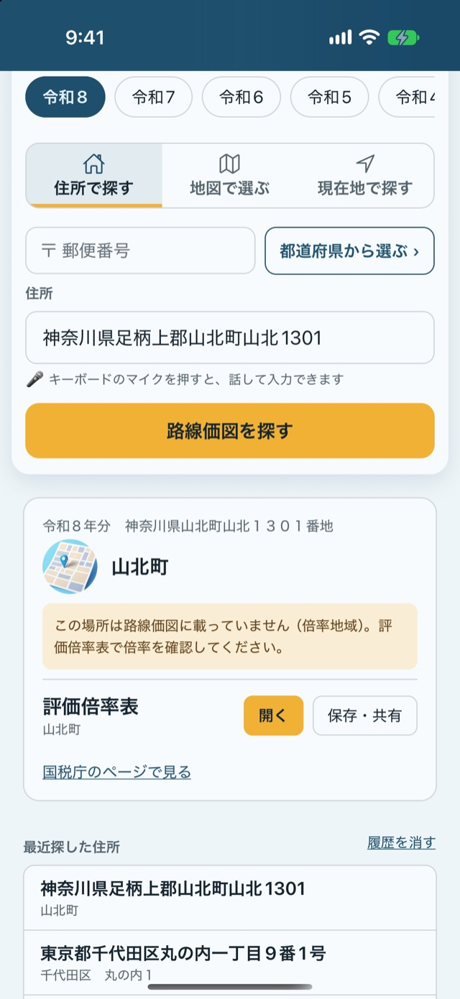

国税庁のサイトでは
- 都道府県
- 市区町村
- 町名
- 索引図
- 図の番号
順にたどって、やっと 1 枚の路線価図にたどり着きます。
路線価めくりでは
令和8年分東京都千代田区丸の内一丁目9番1号
15022この住所の図
年分と住所を入れると、その土地が載っている図を探して開きます。
探し方は 3 つ
住所・地図・現在地のどれからでも探せます。路線価図に載っていない場所なら、そう知らせます。画面はアプリの実物です（iPhone・令和8年分）。
住所で探す
年分と住所（番地まで）を入れると、その場所が載っている路線価図を開きます。隣の図もそのまま並びます。
- 郵便番号 7 桁から、町名までを入れられます
- 都道府県 → 市区町村 → 町名を、一覧から順に選べます
- キーボードのマイクを使えば、話して入力できます

地図で選ぶ
地図をタップした地点の路線価図を探します。住所が分からない土地でも探せます。
- 拡大すると、路線価図の範囲と図の番号が地図の上に出ます（令和8年分）
- 駅名・地名・住所で地図を動かせます

現在地で探す
いま立っている場所の路線価図を探します。現地で土地を見ながら、その場で図を確かめられます。
- 位置情報の利用を許可したときだけ使います

倍率地域なら、評価倍率表を開く
路線価図に載っていない場所（倍率地域）と出たときは、その市町村の評価倍率表を開きます。国税庁のページで見ることもできます。

できることと料金
| 年分 | 平成30年分〜令和8年分 | 年分を切り替えると、同じ場所の別の年分の図をすぐに開けます。市町村の合併・区の再編・市の名前の変更があった場所は、その年分の名前で探します。 |
|---|---|---|
| 開いた図 | 国税庁の PDF のまま | 保存・共有できます。保存した図はいつでも開けます。最近探した住所から、もう一度探せます。 |
| 無料 | 1か月に5件まで | 1件目はそのまま表示します。2〜5件目は、ボタンを押して広告を見たあとに表示します。保存した図を開くとき・隣の図を開くとき・倍率地域と出たときは数えません。 |
| Pro | 月額 600円 | 探せる件数の上限がなくなり、広告が出なくなります。路線価図の上で、住所の街区番号を赤い輪で囲み、その街区を塗ります（無料版は位置の目安の円）。 |
| 配信 | 日本 | iPhone・iPad（App Store）・Android（Google Play）で配信中。Windows 版は準備しています。 |
Pro は自動で更新される月ごとの購読です。解約しても、支払い済みの期間が終わるまでは Pro のまま使えます。解約の仕方はサポートにあります。
ご注意
- 本アプリは国税庁の公式アプリではありません。路線価図は国税庁のサイト「財産評価基準書 路線価図・評価倍率表」から読み込んでいます。
- どの図に載っているかは、住所の位置と国税庁の索引図から推定しています。推定が外れること、隣の図にまたがることがあります。申告や評価に使う前に、必ず図面上の位置をご自身で確かめてください。
- 印と赤い輪・塗りは目安です。税務の助言をするものではありません。
- 国税庁が公開を終えた年分は探せなくなります。
詳しくは利用規約をご覧ください。